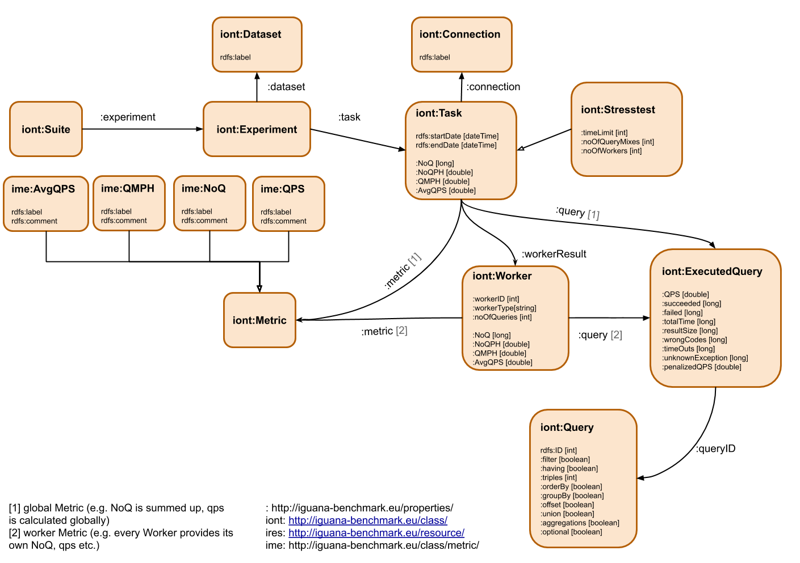

Experiment Results

Fundamentals
The results are saved into RDF. For those who don't know what RDF is, it is best described as a way to represent a directed graph. The according query language is called SPARQL. The graph schema of an iguana result is shown above, where as each node represents a class object containg several annotations.
To retrieve all TaskIDs you can do the following:
PREFIX rdf: <http://www.w3.org/1999/02/22-rdf-syntax-ns#>
PREFIX iprop: <http://iguana-benchmark.eu/properties/>
PREFIX iont: <http://iguana-benchmark.eu/class/>
PREFIX ires: <http://iguana-benchmark.eu/resource/>
SELECT ?taskID {
?suiteID rdf:type iont:Suite .
?suiteID iprop:experiment ?expID .
?expID iprop:task ?taskID .
}
Let's look at an example to clarify how to request the global NoQ metric for a taskID you already know.
Let's assume the taskID is 123/1/1
PREFIX rdf: <http://www.w3.org/1999/02/22-rdf-syntax-ns#>
PREFIX iprop: <http://iguana-benchmark.eu/properties/>
PREFIX iont: <http://iguana-benchmark.eu/class/>
PREFIX ires: <http://iguana-benchmark.eu/resource/>
SELECT ?noq {
ires:123/1/1 iprop:NoQ ?noq
}
If you want to get all the local worker NoQ metrics do the following:
PREFIX rdf: <http://www.w3.org/1999/02/22-rdf-syntax-ns#>
PREFIX iprop: <http://iguana-benchmark.eu/properties/>
PREFIX iont: <http://iguana-benchmark.eu/class/>
PREFIX ires: <http://iguana-benchmark.eu/resource/>
SELECT ?workerID ?noq {
ires:123/1/1 iprop:workerResult ?workerID
?workerID iprop:NoQ ?noq
}
However if you just want to see the global NoQ metric for all taskIDs in your results do the following:
PREFIX rdf: <http://www.w3.org/1999/02/22-rdf-syntax-ns#>
PREFIX iprop: <http://iguana-benchmark.eu/properties/>
PREFIX iont: <http://iguana-benchmark.eu/class/>
PREFIX ires: <http://iguana-benchmark.eu/resource/>
SELECT ?taskID ?noq {
?suiteID rdf:type iont:Suite .
?suiteID iprop:experiment ?expID .
?expID iprop:task ?taskID .
?taskID iprop:NoQ ?noq.
}
Instead of the NoQ metric you can do this for all other metrics, except QPS.
To retrieve QPS look above in the results schema and let's look at an example. Let's assume the taskID is 123/1/1 again.
You can retrieve the global qps values (seen above in ExecutedQueries, e.g QPS, succeeded etc.) as follows,
PREFIX rdf: <http://www.w3.org/1999/02/22-rdf-syntax-ns#>
PREFIX iprop: <http://iguana-benchmark.eu/properties/>
PREFIX iont: <http://iguana-benchmark.eu/class/>
PREFIX ires: <http://iguana-benchmark.eu/resource/>
SELECT ?executedQuery ?qps ?failed ?resultSize {
ires:123/1/1 iprop:query ?executedQuery .
?executedQuery iprop:QPS ?qps.
?executedQuery iprop:failed ?failed .
?executedQuery iprop:resultSize ?resultSize .
}
This will get you the QPS value, the no. of failed queries and the result size of the query.
SPARQL Query statistics
If you were using SPARQL queries as your benchmark queries you can add addtional further statistics of a query, such as: does the query has a FILTER.
PREFIX rdf: <http://www.w3.org/1999/02/22-rdf-syntax-ns#>
PREFIX rdfs: <http://www.w3.org/2000/01/rdf-schema#>
PREFIX iprop: <http://iguana-benchmark.eu/properties/>
PREFIX iont: <http://iguana-benchmark.eu/class/>
PREFIX ires: <http://iguana-benchmark.eu/resource/>
SELECT ?executedQuery ?qps ?hasFilter ?queryText {
ires:123/1/1 iprop:query ?executedQuery .
?executedQuery iprop:QPS ?qps.
?executedQuery iprop:queryID ?query .
?query iprop:filter ?hasFilter .
?query rdfs:label ?queryText .
}
This provides the qps value, if the SPARQL query has a filter and the actual query string.
Ontology
The results ontology (description of what each property and class means) can be found here
Adding LSQ analyzation
If you're using SPARQL and want some more indepth analysation of the query statistics, you can use LSQ to do so.
Iguana will add an owl:sameAs link between the SPARQL queries used in your benchmark and the equivalent LSQ query links.
Hence you can run the performance measurement using Iguana and the query analyzation using LSQ independently and combine both results afterwards